Gizmos
About a week ago, I finally finished implementing my own gizmo for modifying Transform components. For the uninitiated, a transform gizmo is very common in 2D and 3D editing software. They are the handles that allow a user to translate, scale, and rotate an object. I decided to implement my own version of these and I want to go over some of the core systems and ideas that made implementing them possible in this post.
One might ask, "Why implement your own transform gizmo when something like this (ImGuizmo) already exists?" It's a fair question, especially since I am already using ImGui to drive Varkor's editor interface. My justification for doing this is that gizmos are much more than the typical transform gizmo that most would think of. Gizmos can also be used to edit a bezier curve or a terrain height map. Really, gizmos just make the process of editing properties easier than just changing numbers and they tend to achieve this by having an in-world representation. One of my goals with implementing my own gizmos was to have a means of adding these other types of editor controls and I'll absolutely be making use of that when the time comes. It also allowed me to have my own attempt at creating a transform gizmo and that involved a lot of learning about what is necessary in order to get the job done.
With that said, I am going to split this up into a few sections: the gizmo system, handle display and selection, gizmo controls, and reference frames and snapping. After that, I want to show some things that happened before doing the deep dive on gizmos, but aren't very deserving of their own post. Another note: there are multiple code snippets throughout this post. These snippets are going to be dramatically reduced versions of the actual code because I want them to be purely related to the topic being discussed. If you would like to see the full implementation, it can be found in these files: editor/hook/Hook.hh, editor/hook/Transform.h, and editor/hook/Transform.cc. These links point to a specific commit, so they should continue to work until Varkor is not on github or github no longer exists.
The Gizmo System
The first thing that was necessary to get these operational was a system that initializes and runs them. With the current setup, the gizmo for a component type will be displayed if the user has that component's edit tab opened. The process of activating and deactivating the gizmo from the user's perspective is demonstrated in the gif below. As usual, the code side of things is a bit more involved. Varkor has an editor function that handles component inspection (aka running the component's editor hook) called InspectComponent.
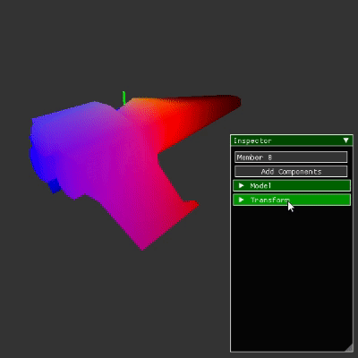
template<typename T>
T* InspectComponent(const World::Object& object)
{
//...
if (ImGui::CollapsingHeader(componentName.c_str()))
{
//...
Edit<T>(component);
return component;
}
return nullptr;
}
If a component's header is opened, the Edit<T>(component) function is called. This Edit<T>(component) function is what I call the editor hook and it's responsible for displaying the ImGui widgets that allow a user to edit component data. Gizmos take this process further. If a component type has a gizmo hook, then, in addition to calling the editor hook, there is another editor function that will handle initialization, running, and cleanup of that component's gizmo. This function is called InspectGizmoComponent and it should be called instead of the InspectComponent function that I showed above. There are multiple functions that act as drivers for the gizmo system, but only two of them are really necessary to gain insight into how it works.
template<typename T>
void StartGizmo()
{
//...
Gizmo<T>* gizmo = new Gizmo<T>;
nGizmoStore.Emplace(componentName, (GizmoBase*)gizmo);
}
template<typename T>
bool RunGizmo(T* component, const World::Object& object)
{
int gizmoIndex = GetExistingGizmoIndex<T>();
Gizmo<T>* gizmo = (Gizmo<T>*)nGizmoStore[gizmoIndex].mGizmo;
return gizmo->Run(component, object);
}
If the gizmo for a component type is not currently active, the StartGizmo<T> function will be called and it will handle calling Gizmo<T>'s constructor and saving the pointer to that structure in the vector called nGizmoStore. With that done, the Gizmo<T> pointer can be retrieved from the nGizmoStore vector to call its Run function during the current and following frames.
Disclaimer: I feel like this system is over engineered. That being said, it does have some cool benefits. Multiple gizmos can be active simultaneously, but more importantly, and the real reason I did this: gizmo resources are only allocated when they need to be and initialization only needs to be performed when the gizmo is first activated. I could have not done this and kept everything on the stack as globals wrapped in a namespace from the start, but as you'll see in the next sections, these gizmos require a lot of data and I felt like this would result in a mess similar to what a vast majority of my editor code has turned into. I also could have reinitialized the gizmos every frame to avoid creating this system, but initializing the Transform component gizmo is actually quite a bit of processing and it would just be a waste of electricity to reinitialize it every frame. I suspect that this might be true for other gizmos as well, however, the Transform gizmo is very hefty and that allows it to be such a powerful tool.
Handle Display and Selection
Now that we've got the system used for initializing and running the gizmos out of the way, we can talk about displaying the gizmo handles and selecting them. At first I thought that this would be the big challenge, but I ended up with pixel perfect selection without too much trouble. The real challenges came later. To understand how handle display and selection works, we first have to cover some of the data contained within the Gizmo<Comp::Transform> structure.
template<>
struct Gizmo<Comp::Transform>: public GizmoBase
{
World::Space mSpace;
World::MemberId mParent, mX, mY, mZ, mXy, mXz, mYz, mXyz;
Gfx::Framebuffer mDrawbuffer;
//...
}
The World::Space structure is similar to a scene in Unity. World::MemberId is used to represent the Id of a member within a space (aka an object) and the MemberIds: mX, mY, mZ, mXz, etc., are the MemberIds of the different handles. mDrawbuffer is the framebuffer that the gizmo handles are rendered to and it is applied to the final render at a later stage. This is communicating that the gizmo is just in another space like the space the object being transformed is contained in. This abstraction is very helpful because it allows for a lot of code reuse. In fact, the code used to determine whether a gizmo handle is being used is the same as the code used to determine whether an object was clicked on in the editor code.
In order to render and make the gizmo handles selectable this data needs to be initialized. The members of this space need to be created and initialized with the appropriate transformations and model asset ids. As I said earlier, there's quite a bit of initialization code, so here is the heavily reduced version of the constructor.
Gizmo<Comp::Transform>::Gizmo(): mDrawbuffer(GL_RGBA, GL_UNSIGNED_BYTE), //...
{
// Initialize the transform and model components of the handles so that the
// gizmo begins as a translate gizmo.
mMode = Mode::Translate;
mParent = mSpace.CreateMember();
mSpace.AddComponent<Comp::Transform>(mParent);
mX = mSpace.CreateChildMember(mParent);
Comp::Transform& xT = mSpace.AddComponent<Comp::Transform>(mX);
xT.SetTranslation({0.5f, 0.0f, 0.0f});
Comp::Model& xM = mSpace.AddComponent<Comp::Model>(mX);
xM.mModelId = smArrowId;
//...
}
My goal with the snippet above was to strip away everything except the code necessary for a single handle. The handle being exemplified is the one used for translation on the X axis, a gorgeous red arrow. The most important part of this code is the relationship between the handle member and its parent. Since the model used for the X axis handle is an arrow that goes from -0.5 to 0.5 on the X axis (the model that uses smArrowId for its Id), moving it to {0.5, 0.0, 0.0} gives us an arrow that goes from 0 to 1 on the X axis. Now that the X axis handle has the correct position and rotation, it does not need to be changed again. Instead we can change the parent member's translation and rotation and that will propogate to the handle's translation and rotation. This is also true for the other handles and it makes putting them in the correct position very easy. This is what that process looks like. We get the object's world translation, give the parent member the same translation, and then we're free to render them to the framebuffer that I mentioned earlier.
void Gizmo<Comp::Transform>::RenderHandles(/*...*/)
{
Vec3 worldTranslation = transform->GetWorldTranslation(space, ownerId);
Comp::Transform& parentT = *mSpace.GetComponent<Comp::Transform>(mParent);
parentT.SetTranslation(worldTranslation);
//...
glBindFramebuffer(GL_FRAMEBUFFER, mDrawbuffer.Fbo());
RenderHandle(mX, xColor);
//...
glBindFramebuffer(GL_FRAMEBUFFER, 0);
Gfx::Renderer::QueueFullscreenFramebuffer(mDrawbuffer);
}
I'm glossing over quite a few details here: handle colors, distance based scaling, and different gizmo types. Though the core idea I want to get across here is the value of the parenting relationship and how much easier it makes this process. Imagine if the translation of each handle had to be set instead of just setting the parent's. Not only that, but we'd have to worry about their rotations too. But no, parenting relationships allow us to ignore all of that so we only need to deal with the parent's transformation. With that, we get gizmo handles that are always centerted on the object being moved. I'll briefly discuss the parenting process after covering everything else about gizmos at the end of this post.
Now that the handles are being displayed. The next step is being able to click on them to start a gizmo operation. Everything I discussed above is necessary for this to work, but instead of rendering to a framebuffer that stores the colors of the handles, we instead render to a framebuffer that stores the MemberIds of the members being displayed. Every pixel in this framebuffer is interpreted as a single integer rather than four separate bytes and all of the pixels are initialized with an invalid MemberId so we know if a handle has been clicked on or not. Once we've rendered the MemberIds to this framebuffer, the last step is getting the MemberId that the mouse is currently hovering over. That happens in the glReadPixels(/*...*/) funcion at the bottom of the snippet below. With that, we have everything necessary to begin addressing the problem of making the gizmo usable.
World::MemberId HoveredMemberId(/*...*/)
{
// Render all of the MemberIds to a framebuffer.
Gfx::Framebuffer handlebuffer(GL_RED_INTEGER, GL_INT);
glBindFramebuffer(GL_FRAMEBUFFER, handlebuffer.Fbo());
glClearBufferiv(GL_COLOR, 0, &World::nInvalidMemberId);
glClear(GL_DEPTH_BUFFER_BIT);
Gfx::Renderer::RenderMemberIds(space, view);
// Find the MemberId at the mouse position.
//...
glReadPixels(
(int)mousePos[0],
Viewport::Height() - (int)mousePos[1],
/*...*/,
(void*)&memberId);
glBindFramebuffer(GL_FRAMEBUFFER, 0);
return memberId;
}
Gizmo Controls
This was both the most challenging and interesting part to tackle while creating the transform gizmo. Once the user clicks and holds to start a gizmo operation, we need to start keeping track of where they drag their mouse and translate that into the operation being performed: translating, scaling, or rotating. I will focus on X axis translation purely here, but the process is the same for the other axes. So the question becomes this, "How do we take a change in mouse position and represent that as a change in X axis translation?".
The first thing we need to have is what I call a mouse ray. It's the ray that goes from the camera's position to the position represented by the mouse cursor on the near plane of the view frustum. Just imagine a line coming out of your eye, through the mouse cursor, and into the world. We then need another ray that I call the gizmo ray. It starts at the position of the object being moved and heads in the direction of the X axis. If we can find the point on the gizmo ray is closest to the mouse ray, we should be able to figure out where the object is moved to as the mouse ray changes.
And so the journey begins. We have two rays and we need to find the point on one ray that is closest to another ray. Step one is to create a representation for rays. For that we use a vector to represent a position and a normalized vector to represent a direction. We can then represent any point on this ray using a single value called t. In the gif below t oscillates between two values and the point calculated using t is represented by the white dot.
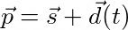
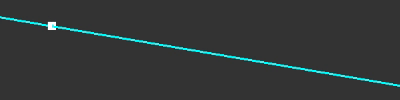
struct Ray
{
Vec3 mStart;
Vec3 mDirection;
};
Now that we have a representation for the ray, we can start addressing the closest point problem. Using our representation as the basis, the new question becomes "What value of t results in a point that is closest to another ray?" To answer that question we need to find a vector covering the distance between points on two different rays. We can then find the magnitude of that vector to get a distance. What we're interested in finding are t values on both rays, we'll call them ta and tb, that put the distance vector's magnitude at its minimum. So let's start by calculating this distance vector and its magnitude. We can find it by taking the difference between points on the two rays.
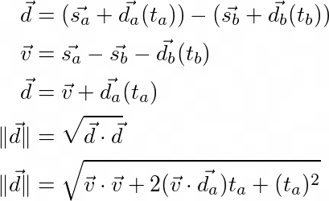
I want to make a few notes about the equations above. The first thing to note is the v vector. I am using this to hide tb from the distance equation ||d||. We want to consider the value of tb to be constant, so using v allows us to ignore it and other values that are constant. The other thing to note is the calculation for the distance vector's magnitude ||d||. In its simple form it's just the square root of dotting the distance vector with itself. The equation below that is what we get after expanding the dot product and simplifying. Remember that the value of tb is still baked into the v vector.
At this point my question became "What does the graph of ||d|| look like when ta and tb are represented on the X and Z axes and the resulting magnitude is graphed on the Y axis?" At first I thought it would look like a porabola centered at the origin and rotated around the Y axis (I always imagine the Y axis as pointing up btw). Imagine taking that weird egg shaped building in London (The Gherkin) and flipping it upside down. My hypothesis was decently close, but still wrong. What we actually get looks like a rounded off cone where the sides of the cone seem to act as asymptotes for the graph.
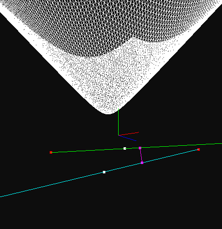
This graph is very cool for a few reasons. One, it doesn't look like I initially expected and that always peeks my interest. Though more importantly it displays where the values of ta and tb result in the minimum distance between the two rays and those are the exact values we need to find to solve the problem. Now we need to find those values and this is where calculus becomes a great deal of help.
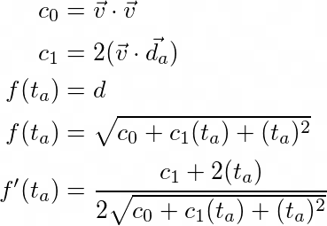
Like the previous set of equations, I want to provide some explanation for these as well. c0 and c1 do the same thing that the v vector did earlier. They put all of the constant values under a label so they can be ignored for now and expanded out later. f(ta) is the same as the distance equation from earlier, but the point here is to demonstrate that this is a function in terms of ta. In reality this is a multivariable function in terms of ta and tb. A partial derivative with respect to ta is being taken and tb is being held constant. tb being constant is why I buried tb inside of the constant terms. With the function in this form we can take its derivative using the chain and power rules. The next step is solving for ta when this derivative evaluates to 0 and then expanding out the constant terms.
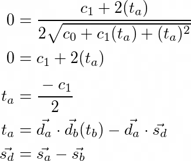
Notice I've added an extra vector called sd. This constant shows up more so I decided to put it under a single label. Besides that detail, this is a moment to behold. We now have ta in terms of our constant values and tb. If we now go through all the steps above but instead hold ta constant, we can find tb in terms of ta. We can then subsitute our equation for tb into our equation for ta to get the value of ta purely in terms of constants. Queue drum role.
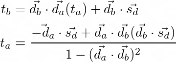
With that, we now have a means to find the point on one ray that is closest to another ray. It's interesting to look at the denominator in the equation for ta. Notice what happens if da and db are the same or opposite. Since they're normalized direction vectors, the term will become one and we'll get a 0 in the denominator. This makes perfect sense. If the two rays are parallel, there are infinitely many points that can be considered the closest point. During my first attempt to solve this problem, I didn't actually get that in the denominator and it sent alarm bells off because I knew there had to be something hinting at what happens when the rays are parallel. Regardless, here's is a pretty cool gif demonstrating this in action and the function that implements the equation for ta.
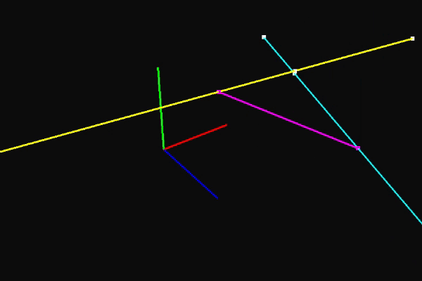
float Ray::ClosestTTo(const Ray& other) const
{
Vec3 sd = mStart - other.mStart;
const Vec3& da = Direction();
const Vec3& db = other.Direction();
float dadb = Math::Dot(da, db);
float dasd = Math::Dot(da, sd);
float dbsd = Math::Dot(db, sd);
float denom = 1.0f - dadb * dadb;
LogAbortIf(denom == 0.0f, "The rays are parallel.");
return (-dasd + dadb * dbsd) / denom;
}
The whole reason we began to travel down this rabbit hole was to have a means of finding out what the new translation of an object is as the gizmo handle for the X axis is clicked and dragged. With the mouse ray, gizmo ray, and this function, we have everything necessary to do just that. I want to mention one other detail here. When a user first begins an operation, the point on the gizmo ray closest to the mouse ray isn't the same as the translation of the object being moved. To account for that, we save the difference between those points and apply it to the closest point every time the translation of the object is set.
I'm glossing over quite a few details still. The Y and Z axes go through the same process, but what about the planes? The only thing different is the usage of a gizmo plane instead of a gizmo ray. We find the intersection point between the mouse ray and the gizmo plane and use that point in the same way as the closest point from earlier. I'm also ignorning the other gizmo types: scale and rotation. It shouldn't be too surprising that these other gizmo types use the same technique, but the transformation the user input manifests as is different. For example, rotation uses the intersection point with the gizmo plane. It starts by saving the intersection point when a user begins to click and hold. This intersection point changes as they drag. We can use the start and current intersection points and the object's translation to create two lines that lie on the same plane. The angle between these lines is used to find the object's new rotation. I also haven't mentioned how we go about creating the mouse ray and that is another challenge on its own. I am pretty sure I could write a short novel if I dove into all of these details and that's why this section is limited to what is discussed above. I hope it gets the idea across and I found it to be the largest challenge of everything that needed to be done. To finish things off, here is the complete transform gizmo in action.

Reference Frames and Snapping
Users get a usable gizmo with everything above, but I wanted to take things a few steps further to start spoiling them. Luckily hanging ornaments on a tree is much easier than cutting the thing down and putting it back up. Before I added gizmos to Varkor, I gave objects the ability have parents and children. I made use of this in the section where I discussed the gizmo handle display and selection. This addition also gave the transform gizmo an oppurtunity to have a feature that makes interacting with this parent/child relationship easier. That's where reference frames come into play.
Consider the following; we have an object that we are placing in our world and we decide to rotate it before translating it to the position we want. After rotating the object, should the translate gizmo handles represent the directions of the world axes or should that representation be rotated to account for the object's rotation? The answer is both because it depends entirely on what the user is up to. Here's a gif to further demonstrate. The object being transformed is rotated and has a rotated parent. The reference frame the transform gizmo uses can be changed to allow the user to translate the object in any reference frame they wish.
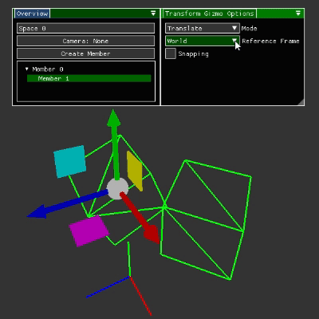
So that's cool, but how does it work? In comparison to everything that came before this, it's very simple and we can thank Hamilton for that. Depending on the selected reference frame, we can get a quaternion that represents that reference frame's rotation. We can then use that quaternion to rotate the parent of our gizmo handles, rotate the gizmo ray's direction, and rotate the gizmo plane's normal. That's all there is to it. Here's the evidence.
Quat Gizmo<Comp::Transform>::ReferenceFrameRotation(/*...*/)
{
Quat rotation;
switch (mReferenceFrame)
{
case ReferenceFrame::World: rotation.Identity(); break;
case ReferenceFrame::Parent: rotation = transform->GetParentWorldRotation(/*...*/); break;
case ReferenceFrame::Relative: rotation = transform->GetWorldRotation(/*...*/); break;
}
return rotation;
}
void Gizmo<Comp::Transform>::RenderHandles(/*...*/)
{
Comp::Transform& parentT = *mSpace.GetComponent<Comp::Transform>(mParent);
parentT.SetRotation(ReferenceFrameRotation(transform, space, ownerId));
//...
}
Like reference frames, snapping is just another ornament that wasn't too difficult to add with all of the other features in place. The idea with snapping is to have the gizmo snap the object's transformation to specified increments. For example, if snapping is enabled, our translation snap parameter is set to 1, our object is at the origin, and we begin translating the object in the positive X direction, the object's translation will go through the following positions: {0, 0, 0}, {1, 0, 0}, {2, 0, 0}, etc. The challenge with snapping was making sure it worked in all cases. Consider what happens if the reference frame being translated is rotated. We want to snap to distances from the object's starting position that are multiples of the translation snap parameter. When it comes to implementation, getting this to work involves setting the magnitude of the change in translation to a multiple of the translation snap parameter. The ScaleToInterval function in the snippet below is responsible for this behavior.
bool Gizmo<Comp::Transform>::Translate(/*...*/)
{
//...
Vec3 delta = newTranslation - translation;
delta = ScaleToInterval(delta, mTranslateSnapInterval);
newTranslation = translation + delta;
transform->SetTranslation(newTranslation);
//...
}
Vec3 Gizmo<Comp::Transform>::ScaleToInterval(Vec3 vector, float interval)
{
float length = Math::Magnitude(vector);
if (Math::Near(length, 0.0f))
{
return {0.0f, 0.0f, 0.0f};
}
float newLength = Math::RoundToNearest(length, interval);
vector = vector / length;
return vector * newLength;
}
In Review
I hope this shines a light onto the magnificent feat that gizmos are. Before I began implementing them, I did not think they would be nearly as much work as they turned out to be (as is true of most things in programming). Even with the work I have done, they still have their fair share of issues. Consider what happens when the mouse ray goes beyond the point of being parallel with the gizmo ray. If we're translating on the X axis and bring the object to a positive infinite X coordinate, the object's translation will suddenly flip to a negative X coordinate because that's the gizmo ray's new closest point to the mouse ray (hint: it's behind you). There's also plenty of issues that arise when performing non-uniform scaling on objects that have children. There's probably other things I have yet to consider too. Regardless, these things are absolute beasts, and even though I expect them to be present in pretty much all 3D editing software, I will never take them for granted again.
Parenting, Cameras, and Fractals
Before taking on gizmos, I finished a few other tasks and a fun little project that I'll talk briefly about here. I've mentioned it multiple times, but one of the things that came before the gizmo implementation was parent/child relationships. The main application for this relationship is its effect on Transform components. When an object has a parent with its own Transform component, the child object's transformation becomes relative to the parent. To differentiate, I refer to the relative transformation as the local transformation and the other as the world transformation. This allows us to do things like what is shown in the gif below. The largest sphere is the parent and the next largest sphere is a child of the largest sphere and the parent of the smallest. The only things that are changing are the rotations of the largest and next largest spheres.
This is an extremely useful feature to have and the math required to make it work is just a single matrix multiplication. The real work comes from all the structure that is needed to set up the relationship. Once that is complete, all we need to do is multiply the local transformation by the parent's world transformation (row major matrices btw).
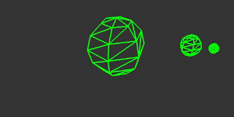
Mat4 Transform::GetWorldMatrix(/*...*/)
{
//...
const Mat4& localTransformation = GetLocalMatrix();
Mat4 parentTransformation = parentTransform->GetWorldMatrix(space, parentId);
return parentTransformation * localTransformation;
}
Once I finished this feature, the next thing to add was the ability to use a camera other than the editor camera. One might think this would require adding a Camera component and using that component to get the view matrix that is used for rendering. I could have done that, but I decided against it for now. Instead of using a dedicated Camera component, an object can be used as a camera if it has a Transform component. I do plan on adding a dedicated Camera component in the future so a user can change things like fov and near/far plane distances, but I held off on doing it because Varkor does not have a dependency system yet. I would like Camera components to be dependent on Transform components because I do not want to duplicate the data contained in the Transform component in the Camera component, but I digress. The more imporant thing to mention here is the process of creating a view matrix. It's just a matter of finding the inverse of the Transform component's world matrix. Essentially, if we do the exact opposite of everything necessary to get a Transform component's world matrix, we get its inverse world matrix and that can be used as the view matrix.

Mat4 Transform::GetInverseLocalMatrix()
{
Mat4 inverseScale, inverseRotate, inverseTranslate;
Math::Scale(&inverseScale, 1.0f / mScale);
Math::Rotate(&inverseRotate, mRotation.Conjugate());
Math::Translate(&inverseTranslate, -mTranslation);
return inverseScale * inverseRotate * inverseTranslate;
}
Mat4 Transform::GetInverseWorldMatrix(/*...*/)
{
//...
Mat4 inverseLocalMatrix = GetInverseLocalMatrix();
Mat4 inverseParentMatrix = parentTransform->GetInverseWorldMatrix(/*...*/);
return inverseLocalMatrix * inverseParentMatrix;
}
Before addressing anything discussed above, I did a fun little project to take a break from implementing Varkor features. Many people are familiar with fractals and I was a bit dissappointed that I had never implemented fractals myself. I understood the basic idea, but I didn't fully understand exactly what was going on to create things like the famous images of the Mandelbrot and Julia sets. To remedy that curiosity, I spent a few days making my own fractal program called Fractalkor. This was my first project that uses Varkor as its backend. Even though I only use utils from Varkor in the program, it was exciting to make my first subproject with the engine. Furthermore, it makes me very excited for the future because my intent with creating Varkor is to use it as the backbone for other projects and this is the first time that I did that. To wrap things up, I'll leave you with some pretty gifs that I generated while working on the project. Thanks for reading. Up next: serialization, more control over graphics, and other things I am brewing in my head.